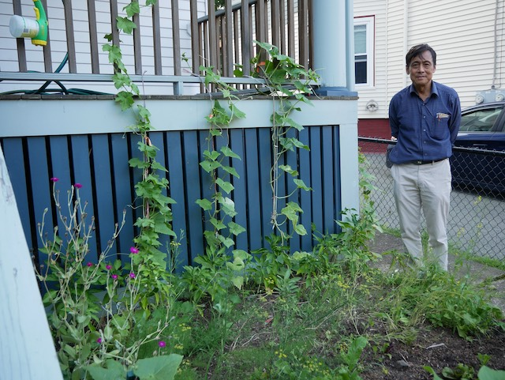
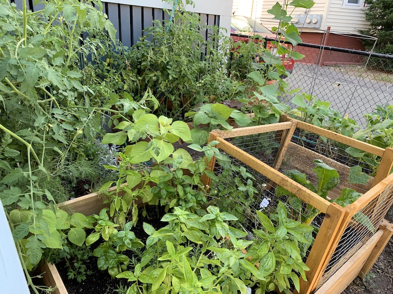
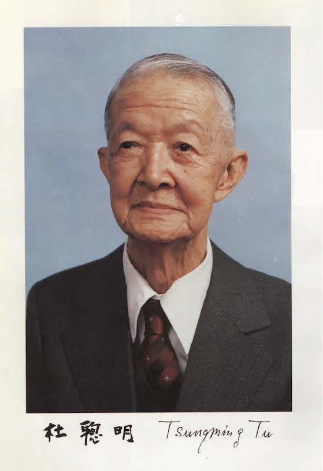

Hobbies

My garden in 2018.

The same garden in 2019.
In my spare time, I enjoy gardening, cooking, swimming, weightlifting,
classical music, and films.
I am writing a cookbook of all my favorite dishes, gathered from the various
countries I have lived in. Each recipe is fully
tested and accompanied by a photo of the cooked dish.
My favorite directors are Ernst Lubitsch, Alfred Hitchcock, Dario Agento, and
Brian De Palma. I recommend almost all of their films. My favorite film is
Trouble in Paradise (1932), followed by
To Be and Not to Be (1942), both
directed by Ernst Lubitsch.
Nonmathematical Publications
-
My Autobiography (in Chinese), in Taiwan People News,
November 10, 2017.
-

Anecdotes from the Life of Tsungming Tu (in Chinese),
in the Memorial Volume of the 120th Anniversary of Dr. Tsungming Tu ,
Dr. Tsungming Tu Scholarship Foundation, Linsen N. Road, Lane 67, No. 57, Taipei,
Taiwan, August 2013.
My grandfather Tsungming Tu was a Japanese-trained pharmacologist who did research on the
pharmacology of opium, snake venom, and Chinese and Western medicine. He was
responsible for the eradication of opium in Taiwan and is generally considered
the father of Taiwanese modern medicine.